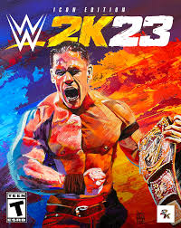

WELCOME TO WWE 2K23
WWE 2K23 is a 2023 professional wrestling sports video game developed by Visual Concepts and published by 2K. It is the twenty-third overall installment of the video game series based on WWE, the ninth game under the WWE 2K banner, and the successor to WWE 2K22. It was released on March 14, 2023, for PlayStation 4, PlayStation 5, Windows, Xbox One, and Xbox Series X/S.

Like its predecessor, WWE 2K23 features arcade and simulation wrestling gameplay. WarGames is featured for the first time in a WWE 2K game, and the Royal Rumble match now supports online multiplayer with up to eight players. Referee voiceovers have been revamped with different voices and unique lines when the pinfall occurs.